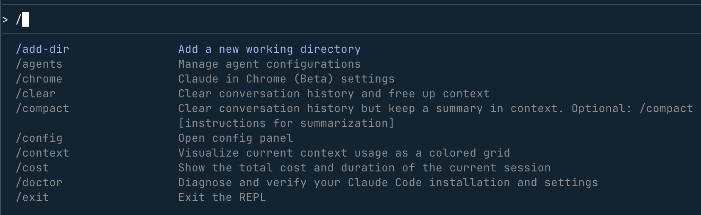

Claude Code インストールと使用方法
正式にインストールする前に、Claude Code の利用方法がいくつかあるかを確認し、自分に最も合う方法を選びましょう。
| 方法 | 対象者 | 長所 | 短所 |
|---|---|---|---|
| Web 版 | 完全な初心者 | インストール不要で、ブラウザを開くだけで利用可能 | 機能は比較的限定的で、ローカルコードとの深い統合ができない |
| CLI（コマンドライン） | ある程度経験のある開発者 | 機能が完全で統合度が高く、設計の本来の意図に最も近い | コマンドライン操作に慣れている必要がある |
| エディタ統合（VS Code / Cursor など） | 日常の開発者 | 既存のワークフローにシームレスに統合され、ウィンドウを切り替える必要がない | プラグインと環境設定に依存する |
選択のアドバイス：
- あなたが完全な初心者なら、まずアクセスしてhttps://claude.ai/Web 版で試してみて、Claude の対話方法に慣れてください
- もしあなたが本格的に開発に使用するなら、直接学んでくださいCLI（コマンドライン）、機能が最も完全です
- CLI を使いこなせるようになってから、必要に応じて検討してくださいエディタ統合
現在、Claude Code はデスクトップ版も提供しています。以下のアドレスからダウンロードできます：https://claude.com/download

本チュートリアルはCLI 方式を主としています。それは最も安定しており、最も汎用性が高く、Claude Code の設計本来の意図に最も近いからです。
Claude Code CLI のインストール
1、事前準備
インストール前に、以下の2つを準備する必要があります：
① Claude アカウント
- アクセスしてclaude.aiアカウントを登録する
- すでに Claude のウェブ版チャットを利用している場合は、アカウントはすでにあるので、この手順をスキップできます。
- 国内（中国）の大規模モデル（DeepSeek、Minimax、GLM など）を使用する予定がある場合は、アカウント登録を一時的にスキップしても構いません。後述で切り替え方法を紹介します。
② コマンドラインツール
- Mac / Linux：システム標準のターミナル（Terminal）を開くだけでOKです。
- Windows：PowerShell を開くか、WSL（Windows Subsystem for Linux）をインストールして使用してください。
2、公式スクリプトでのインストール（推奨）
公式はワンクリックインストールスクリプトを提供しています。お使いのシステムに応じて対応するコマンドを選択して実行してください：
macOS、Linux、WSL：
curl -fsSL https://claude.ai/install.sh | bash
Windows PowerShell：
irm https://claude.ai/install.ps1 | iex
Windows CMD：
curl -fsSL https://claude.ai/install.cmd -o install.cmd && install.cmd && del install.cmd
Homebrew:
brew install --cask claude-code
WinGet:
winget install Anthropic.ClaudeCode
インストール完了後、正常にインストールされたか確認します：
claude --version
ターミナルにバージョン番号（例：1.x.x）が表示されたら、インストール成功です：
2.1.81 (Claude Code)
3、npm を使用したインストール（非推奨）
公式は現在、npm でのインストール方法を推奨していません。上記の公式スクリプトを優先的に使用することをおすすめします。どうしても npm でインストールする必要がある場合は、まず Node.js がインストールされていることを確認してください：
node --version
バージョン番号が出力された場合（例：v18.17.0）、インストールされています。「コマンドが存在しません」と表示された場合は、次のサイトにアクセスしてnodejs.orgダウンロードしてインストールしてください。
Node.js が使用可能であることを確認したら、以下のコマンドを実行して Claude Code をインストールします：
npm install -g @anthropic-ai/claude-code
インストールが完了するのを待ち（数分かかる場合があります）、その後確認します：
claude --version
4、Claude Code の更新
以下のコマンドで直接更新できます：
claude install
または：
claude update
Claude Code は起動時と実行時に自動的に更新をチェックします、バックグラウンドでダウンロードが完了すると、次回起動時に有効になります。自動更新に関する設定はsettings.jsonの中に書かれています：
例
"autoUpdatesChannel": "stable" // 更新チャネル：stable（安定版、推奨）または beta（ベータ版）
}
Claude Code の内部で/configコマンドを使用して設定することもできます。
自動更新が不要な場合は、settings.json 的 env内で無効にできます：
例
"env": {
"DISABLE_AUTOUPDATER": "1" // "1" に設定すると自動更新を無効化、"0" またはこの行を削除すると自動更新を再有効化
}
}
によってHomebrew 或 WinGetインストールした Claude Code は自動更新をサポートしていないため、手動で以下のコマンドを実行して更新する必要があります：
# macOS Homebrew brew upgrade claude-code #Windows WinGet winget upgrade Anthropic.ClaudeCode
5、よくあるインストール問題のトラブルシューティング
問題1：次のメッセージが表示されるnpm command not found
- 原因：コンピューターに Node.js がインストールされていない
- 解決方法：アクセスしてnodejs.orgNode.js をダウンロードしてインストールし、インストール完了後にインストールコマンドを再実行してください。
問題2：次のメッセージが表示されるpermission denied
- 原因：現在のユーザーにグローバルインストールの権限がない
- 解決方法（Mac / Linux）：コマンドの前に
sudoを追加して権限を昇格します：sudo npm install -g @anthropic-ai/claude-code
- 解決方法（Windows）：PowerShell を右クリックして「管理者として実行」を選択し、インストールコマンドを再実行してください。
問題3：インストール速度が非常に遅い、または止まってしまう
- 原因：ネットワークから国外のソースへのアクセスが遅い
- 解決方法：以下のパラメータ
--registryを追加して国内ミラーソースに切り替えます：npm install -g @anthropic-ai/claude-code --registry=https://registry.npmmirror.com
おすすめのターミナル：システム標準のターミナルの使い勝手が今ひとつだと感じる場合、以下のターミナルは Claude Code を使用する際に、より良い体験ができます：
- WezTerm（クロスプラットフォーム）：https://wezterm.org/
- Alacritty（クロスプラットフォーム）：https://alacritty.org/
- Ghostty（Linux / macOS）：https://ghostty.org/
- Kitty（Linux / macOS）：https://github.com/kovidgoyal/kitty
その他のターミナルツールの参考：https://www.runoob.com/w3cnote/terminal-tools.html
Claude Code のアンインストール
最初のインストール方法に応じて、対応するアンインストールコマンドを選択してください。
1、公式スクリプトでのインストール（ネイティブインストール）
Claude Code の実行ファイルとバージョンファイルを削除します：
macOS、Linux、WSL：
rm -f ~/.local/bin/claude rm -rf ~/.local/share/claude
Windows PowerShell：
Remove-Item -Path "$env:USERPROFILE\.local\bin\claude.exe" -Force Remove-Item -Path "$env:USERPROFILE\.local\share\claude" -Recurse -Force
2、Homebrew でのインストール
brew uninstall --cask claude-code
3、WinGet でのインストール
winget uninstall Anthropic.ClaudeCode
4、npm でのインストール
npm uninstall -g @anthropic-ai/claude-code
5、設定ファイルの削除（任意）
上記のコマンドは実行プログラムをアンインストールするだけで、設定ファイルと履歴は自動的に削除されません。すべてのデータ（設定、認可済みツール、MCP サーバー設定、セッション履歴を含む）を完全に消去したい場合は、追加で以下のコマンドを実行する必要があります：
⚠️ 設定ファイルの削除は元に戻せません操作を行うと、すべてのローカル設定と履歴が完全に失われます。実行前に確認してください。
macOS、Linux、WSL：
# 删除全局用户设置和状态 rm -rf ~/.claude rm ~/.claude.json # 删除当前项目的本地设置（在项目目录中执行） rm -rf .claude rm -f .mcp.json
Windows PowerShell：
# 删除全局用户设置和状态 Remove-Item -Path "$env:USERPROFILE\.claude" -Recurse -Force Remove-Item -Path "$env:USERPROFILE\.claude.json" -Force # 删除当前项目的本地设置（在项目目录中执行） Remove-Item -Path ".claude" -Recurse -Force Remove-Item -Path ".mcp.json" -Force
Claude Code へのログイン
1、初回ログインの流れ
プロジェクトディレクトリで Claude Code を起動します：
claude
初回起動時、Claude Code がログインを案内します。画面に入った後、手動でログインコマンドを入力することもできます：
/login
ターミナルの指示に従ってログイン認証を完了してください。ログイン後、認証情報はローカルに保存され、次回起動時に再ログインする必要はありません。アカウントを切り替える場合は、再度実行/loginしてください。
2、対応アカウントの種類
以下のいずれかのアカウントタイプでログインできます：
① Claude サブスクリプションアカウント（推奨）
- Claude Pro：個人プロフェッショナル版
- Claude Max：最上位サブスクリプション
- Claude Teams：チーム版
- Claude Enterprise：エンタープライズ版
② Claude Console アカウント（API アクセス）
- API 経由でアクセスし、プリペイドクレジットで課金されます
- 開発者やプログラムによるアクセスが必要なシーンに適しています
- 同じメールアドレスで、サブスクリプションアカウントと Console アカウントの両方のタイプを同時に持つことができます
3、ワークスペースの自動作成（Console アカウント）
初めて Claude Console アカウントで Claude Code を認証するとき、システムは自動的にあなたの Console 内に「"Claude Code"」という名前のワークスペースを作成します。用途：
- すべての Claude Code の API 使用コストを一元管理します
- 組織内の複数人の Claude Code 利用状況を管理しやすくします
最初のセッションを開始する
1、プロジェクトディレクトリで起動する
ターミナルを開き、まずプロジェクトディレクトリに移動してから Claude Code を起動します。これにより、Claude はプロジェクトファイルを読み取って、的確な支援を提供できます：
cd /path/to/your/project claude
2、ウェルカム画面
起動後、Claude Code のウェルカム画面が表示されます。現在のセッション情報、最近の会話履歴、最新の更新説明が含まれます：

3、利用可能なコマンドを確認する
入力ボックスに入力します/help利用可能なすべての機能を確認できます：
/help
入力/resume中断された以前の会話を復元できます：
/resume
入力ボックスに直接入力します/すると、利用可能なすべてのコマンドの補完リストが表示されます：

詳細な認証情報の管理については、公式ドキュメントの「Credential Management」のセクションを参照してください。
最初の質問をする
1、プロジェクトを理解する
プロジェクトディレクトリに入って Claude Code を起動したら、まずコードベースを分析させることができます：
what does this project do?
Claude はプロジェクトファイルを自動的に読み取り、プロジェクトの概要を提示します。
Claude Code は必要に応じて自動的にファイルを読み取ります——ファイルの内容を手動でコピー＆ペーストして会話に入力する必要はありません。必要なコンテキストを自動的に見つけます。
2、その他のプロジェクト関連の問題
より具体的な情報を質問することもできます：
what technologies does this project use?
where is the main entry point?
explain the folder structure
3、Claude Code の能力について尋ねる
Claude 自身が何ができるかを直接尋ねることもできます：
what can Claude Code do?
how do I use slash commands in Claude Code?
can Claude Code work with Docker?
Claude は自身のドキュメントにアクセスできるため、自身の機能や特性に関する質問に正確に回答できます。
最初のコード変更を行う
1、簡単なタスクを実際に試す
ここでは Claude Code に実際にコードを書かせてみましょう。テストディレクトリを作成し、「test.py」ファイルに Hello World 関数を追加させます：
cd runoob-test # 进入测试目录（没有则新建一个） claude # 启动 Claude Code
画面に入ったら、次のように入力します：
在 test.py 文件中添加 hello world 函数
Claude Code は提案されたコード変更を表示し、実行前に確認を求めます。「yes」を選択して Enter キーを押すと適用されます：

2、Claude Code の変更ワークフロー
コード変更のたびに、Claude Code は以下のフローに従って実行します：
- 関連ファイルを特定する：プロジェクト内で変更が必要なファイルを自動的に特定します
- 提案された変更を表示する：差分比較の形式で行う変更を表示します
- 承認を求める：実行前にあなたの確認が必要です
- 編集を実行する：確認後、ファイルに書き込みます
各変更を個別に承認することも、現在のセッションで「すべて受け入れる」モードを有効にして一括承認することもできます。
Git 機能の使用
Claude Code を使うと、Git 操作が日常会話のように簡単になります。やりたいことを自然言語でそのまま記述するだけです。
1、基本的な Git 操作
変更されたファイルを表示する：
what files have I changed?
変更をコミットする（Claude が自動的にコミットメッセージを生成します）：
commit my changes with a descriptive message
2、より複雑な Git 操作
新しいブランチを作成する：
create a new branch called feature/quickstart
最近のコミット履歴を表示する：
show me the last 5 commits
マージコンフリクトの解決を支援する：
help me resolve merge conflicts
バグの修正または機能の追加
1、新機能の追加
追加したい機能を自然言語で説明すると、Claude Code が適切な場所を見つけて実装します：
add input validation to the user registration form
2、既存の問題の修正
バグの症状を説明すると、Claude が原因を特定して修正します：
there's a bug where users can submit empty forms - fix it
3、Claude Code の問題処理の流れ
- 関連コードを特定する：コードベース内で問題に関連するファイルと関数を見つけます
- コンテキストを理解する：コードのロジックを分析し、問題の根本原因を理解します
- 解決策を実装する：修正提案を提示し、diff を表示します
- テストを実行する：プロジェクトにテストが存在する場合、Claude は修正効果を検証するためにテストの実行を試みます
その他の一般的なワークフロー
コードリファクタリング
refactor the authentication module to use async/await instead of callbacks
テストの作成
write unit tests for the calculator functions
ドキュメントの更新
update the README with installation instructions
コードレビュー
review my changes and suggest improvements
Claude Code は、あなたの AI ペアプログラミングパートナーです。経験豊富な同僚と話すように Claude と対話してください——実現したいことを説明すれば、特定のコマンド形式にとらわれる必要はなく、自然言語で表現するだけで、最適な実装方法を見つけてくれます。
よく使うコマンド早見表
コマンドラインコマンド（ターミナルで使用）
| コマンド | 機能 | 例 |
|---|---|---|
claude |
対話モードを起動する（最も一般的） | claude |
claude "任务描述" |
一度きりのタスクを実行して対話モードを終了する | claude "fix the build error" |
claude -p "查询内容" |
単一のクエリを実行してすぐに終了する（スクリプト連携に適しています） | claude -p "explain this function" |
claude -c |
現在のディレクトリの直近の会話を続行する | claude -c |
claude -r |
履歴から選択して会話を復元する | claude -r |
claude commit |
Claude に Git コミットメッセージを自動生成させてコミットする | claude commit |
claude update |
Claude Code を手動で最新バージョンに更新する | claude update |
claude --version |
現在インストールされているバージョン番号を確認する | claude --version |
対話モード内のコマンド（Claude Code インターフェースで使用）
| コマンド | 機能 | 例 |
|---|---|---|
/help |
利用可能なすべてのコマンドと機能の説明を表示する | /help |
/login |
アカウントにログインするか、他のアカウントに切り替える | /login |
/resume |
履歴から中断された以前の会話を復元する | /resume |
/clear |
現在の会話履歴を消去して、新しいセッションを開始する | /clear |
/config |
Claude Code の設定を表示および変更する | /config |
exit 或 Ctrl+C |
Claude Code を終了してターミナルに戻る | exit |
クリックしてノートを共有
<p style="font-size:14px;">ノートはこの記事の内容の拡張である必要があります！</p><br> <p style="font-size:12px;"><a href="../tougao.html" target="_blank">記事投稿はこちらをクリック</a></p> <p style="font-size:14px;"><a href="../w3cnote/runoob-user-test-intro.html" target="_blank">招待コードの取得方法</a></p> <h3 class="text-muted"><i class="fa fa-info-circle" aria-hidden="true"></i> ノートを共有する前に必ず<a href=";.html" class="runoob-pop">ログイン</a>！</h3> <p><a href="../w3cnote/runoob-user-test-intro.html" target="_blank">招待コードの取得方法</a></p>